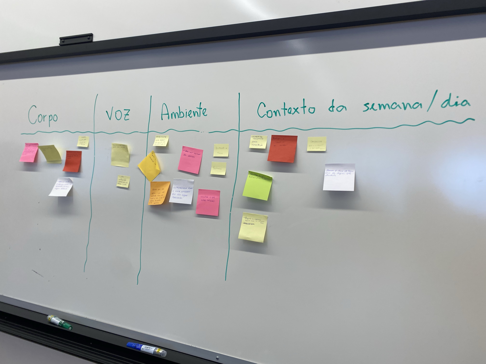
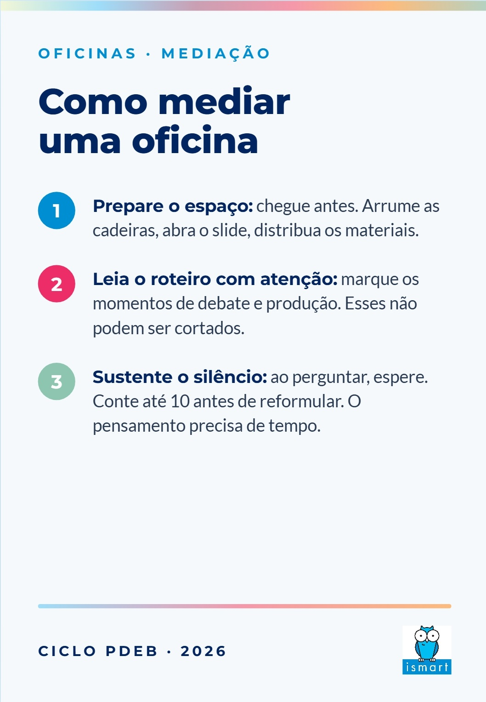
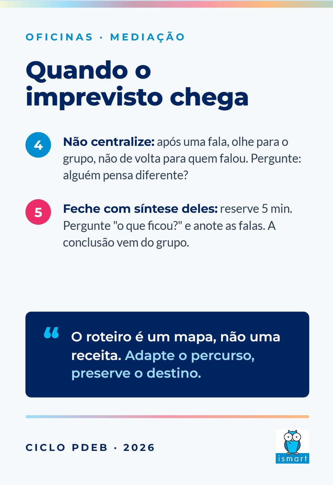
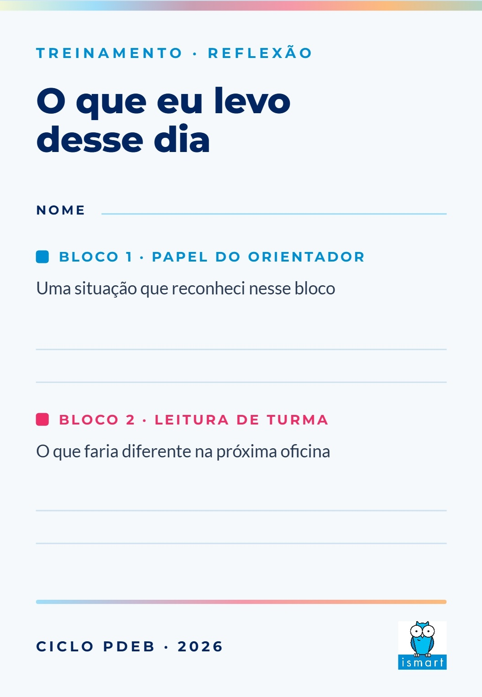
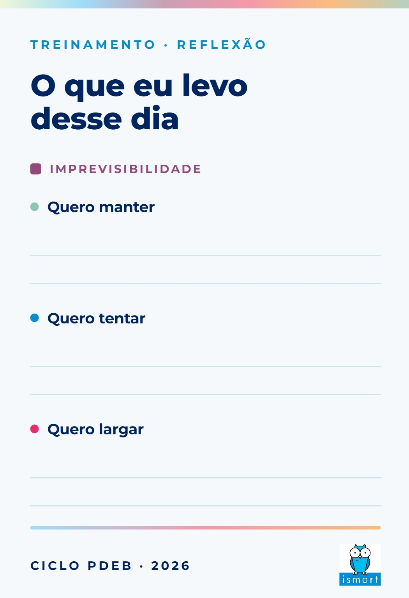
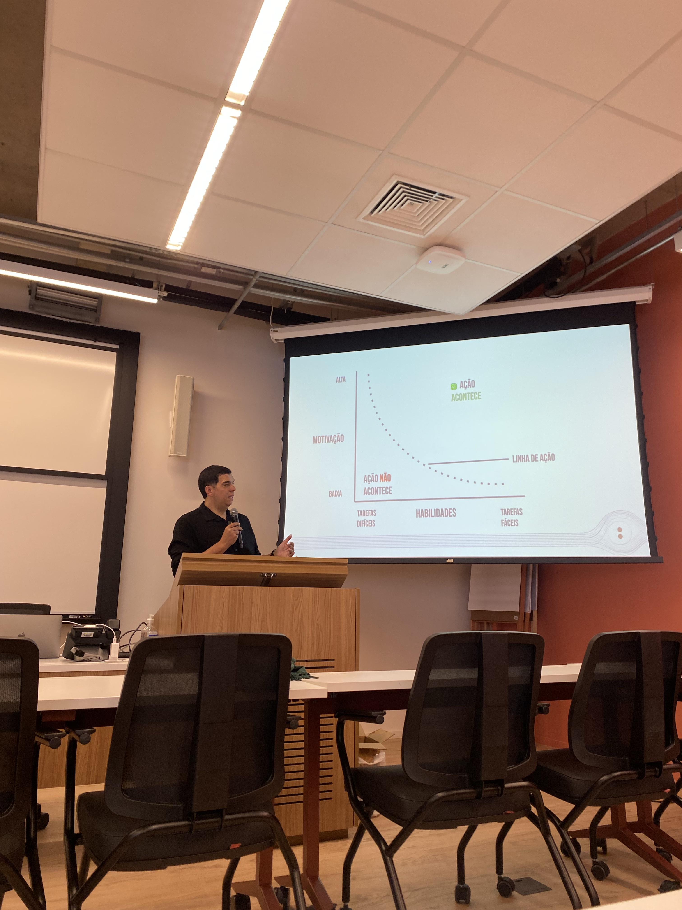

O problema
Educadores em 4 cidades diferentes precisavam aplicar a mesma metodologia de desenvolvimento de competências, com a mesma qualidade, pra mais de 700 estudantes. Treinamento expositivo tradicional não resolve isso: a pessoa sai da sala sabendo a teoria e trava na primeira situação real.
A solução
Desenhei uma formação baseada em problemas: em vez de slides, os educadores recebem cenários reais de sala (comportamentos desafiadores, dilemas de mediação) e precisam resolver na prática, em simulações com os colegas.
- Cards de cenário: material físico próprio com situações reais e comportamentos mapeados, desenhado dentro da identidade visual da instituição;
- Simulação e feedback imediato: cada cenário é praticado, discutido e refinado em grupo;
- Certificação digital verificável: certificados com QR code de autenticação online;
- Ciclo contínuo: depois da formação, observações de campo com critérios objetivos e devolutivas individualizadas geradas com apoio de IA, garantindo consistência entre as 4 cidades.


À esquerda, construção coletiva de uma das dinâmicas: o que observar em corpo, voz, ambiente e contexto na facilitação. À direita, o certificado digital com ID de verificação que desenvolvi pros participantes.
O material que criei
Um dos pontos altos da formação foi o card de reflexão e o roteiro de mediação que desenhei pros orientadores, dentro da identidade visual do Ismart. O card de reflexão fecha o dia convidando cada orientador a registrar o que quer manter, tentar e largar na própria prática, além de nomear uma situação real reconhecida naquele bloco. Já o roteiro de mediação resume, em cinco passos, como conduzir uma oficina do início ao imprevisto, fechando com uma frase que virou o mote do treinamento: o roteiro é um mapa, não uma receita.




Frente e verso do card de reflexão e do roteiro de mediação que criei pra formação, parte do material físico entregue a cada orientador.
A tarde com convidado externo
Pra fechar o dia, convidei o educador Cláudio Hansen (Dois Pontos, Educação Criativa) pra um workshop sobre como uma conversa se transforma em aprendizagem, trabalhando com os orientadores o modelo de comportamento de BJ Fogg (ação = motivação + habilidade + pedido), camadas de priorização de oficina e antecipação de decisões diante de imprevistos.
O resultado apareceu na avaliação: o workshop recebeu nota máxima na pesquisa de satisfação dos participantes.


À esquerda, o Cláudio apresentando o modelo de ação pros orientadores. À direita, a turma no fim do dia, registrada em polaroid.
Como construí
Parti dos dados: as observações de campo mostravam em quais práticas os educadores mais precisavam de apoio. Os cenários da formação foram escritos a partir dessas situações reais, não de casos genéricos de livro.
O material físico, o roteiro de facilitação e o sistema de certificação foram todos produzidos internamente, e a avaliação da formação foi desenhada pra medir aprendizado de verdade, não só satisfação com o dia.